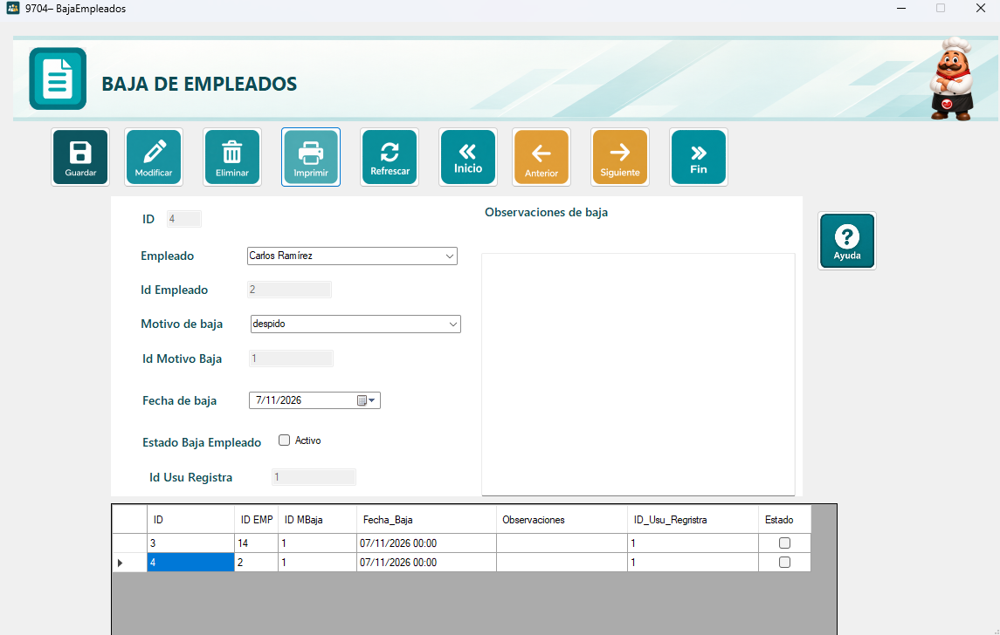
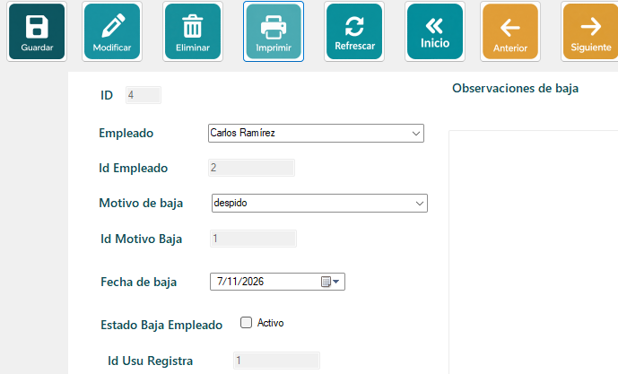
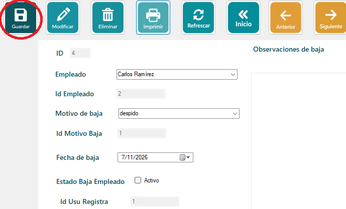
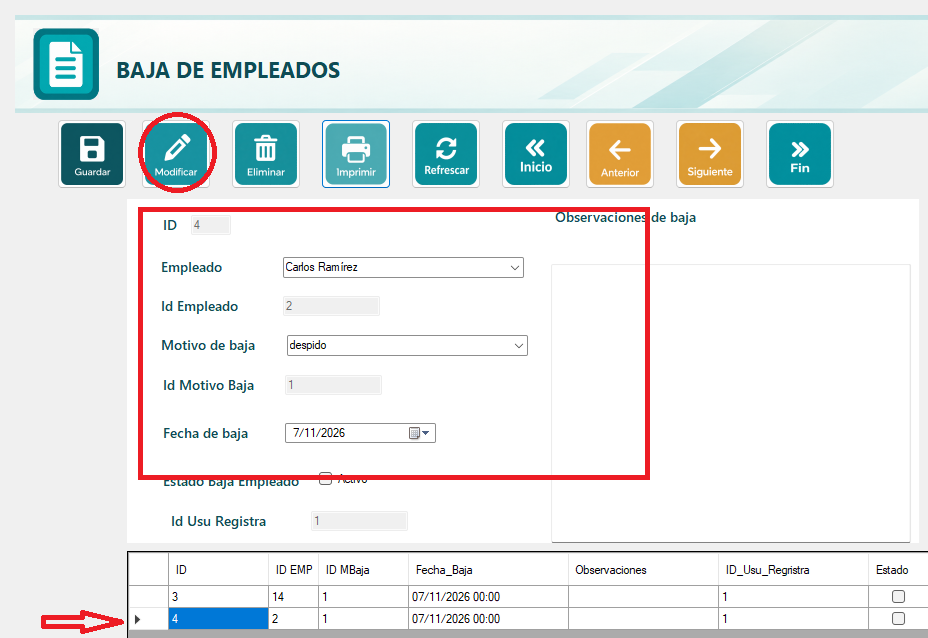
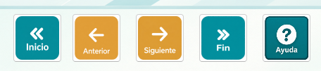
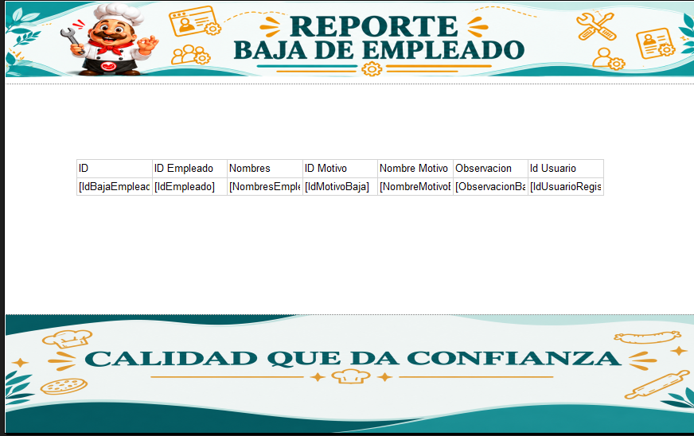

El formulario de Baja de Empleados permite registrar formalmente la salida o desvinculación de un colaborador de la empresa, documentando la fecha exacta, el motivo de la salida y las observaciones pertinentes.
Por ejemplo, si un empleado renuncia o finaliza su contrato, se registra aquí su desvinculación. Este registro es un paso fundamental y previo para que posteriormente se pueda calcular su liquidación correspondiente.

Seleccione el nombre del empleado en el listado desplegable, elija el motivo de baja (renuncia, despido, etc.) y asigne la fecha en la que se hace efectiva su salida. Puede agregar notas adicionales en el cuadro de observaciones. Una vez listos los datos, presione el botón Guardar.

Una vez completados los datos solicitados en el formulario, presione el botón Guardar. El sistema validará la información, mostrará un mensaje confirmando que la grabación fue exitosa y el nuevo registro aparecerá en la tabla inferior.

1. Seleccione la fila que desea cambiar haciendo clic en la orilla izquierda del registro en la tabla inferior.
2. Los datos de la baja seleccionada se cargarán automáticamente en los campos de la parte superior.
3. Realice los cambios necesarios (por ejemplo, corregir la fecha, cambiar el motivo o actualizar las observaciones).
4. Presione el botón Modificar. El sistema guardará la actualización y mostrará un mensaje confirmando el cambio.

En la parte superior del formulario se encuentran los botones de navegación (Inicio, Anterior, Siguiente y Fin), que le permiten desplazarse de forma rápida entre todos los registros de bajas guardados en el sistema.

Presione el botón Imprimir para abrir una ventana con el reporte oficial de las bajas registradas, el cual incluye: ID, empleado, motivo de baja, fecha, observaciones y el usuario que registró la acción.
Desde la barra superior del visor del reporte puede desplazarse entre las páginas, actualizar la información, ajustar el zoom, imprimir el documento directamente o exportarlo a otros formatos como PDF o Excel.
